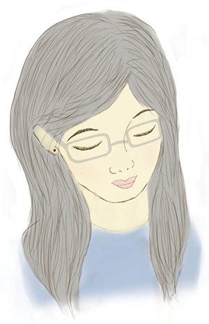

Hi!
Thanks for visiting me! I'm Winona and this is my website. Here you can find a collection of UI/UX work I've done, a large number of illustrations, as well as some information on who I am.
I love designing and learning new things, and most importantly, I love what I do.
The links on the left will lead you to the major sections of the website, and more specialized links will appear across the top.
I'd suggest taking a look at my UI & UX work. I've added bunch of new projects and images there, so go ahead!